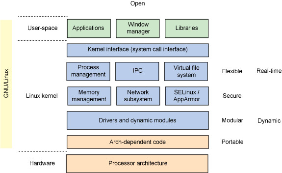

Linux
Intro

1. BIOS
- BIOS stands for Basic Input/Output System
- Performs some system integrity checks
- Searches, loads, and executes the boot loader program.
- It looks for boot loader in floppy, cd-rom, or hard drive. You can press a key (typically F12 of F2, but it depends on your system) during the BIOS startup to change the boot sequence.
- Once the boot loader program is detected and loaded into the memory, BIOS gives the control to it.
- So, in simple terms BIOS loads and executes the MBR boot loader.
2. MBR
- MBR stands for Master Boot Record.
- It is located in the 1st sector of the bootable disk. Typically /dev/hda, or /dev/sda
- MBR is less than 512 bytes in size. This has three components 1) primary boot loader info in 1st 446 bytes 2) partition table info in next 64 bytes 3) mbr validation check in last 2 bytes.
- It contains information about GRUB (or LILO in old systems).
- So, in simple terms MBR loads and executes the GRUB boot loader.
3. GRUB
- GRUB stands for Grand Unified Bootloader.
- If you have multiple kernel images installed on your system, you can choose which one to be executed.
- GRUB displays a splash screen, waits for few seconds, if you don't enter anything, it loads the default kernel image as specified in the grub configuration file.
- GRUB has the knowledge of the filesystem (the older Linux loader LILO didn't understand filesystem).
- Grub configuration file is /boot/grub/grub.conf (/etc/grub.conf is a link to this). The following is sample grub.conf of CentOS.
- As you notice from the above info, it contains kernel and initrd image.
- So, in simple terms GRUB just loads and executes Kernel and initrd images.
#boot=/dev/sda
default=0
timeout=5
splashimage=(hd0,0)/boot/grub/splash.xpm.gz
hiddenmenu
title CentOS (2.6.18-194.el5PAE)
root (hd0,0)
kernel /boot/vmlinuz-2.6.18-194.el5PAE ro root=LABEL=/
initrd /boot/initrd-2.6.18-194.el5PAE.img
4. Kernel
- Mounts the root file system as specified in the “root=” in grub.conf
- Kernel executes the /sbin/init program
- Since init was the 1st program to be executed by Linux Kernel, it has the process id (PID) of 1. Do a 'ps -ef | grep init' and check the pid.
- initrd stands for Initial RAM Disk.
- initrd is used by kernel as temporary root file system until kernel is booted and the real root file system is mounted. It also contains necessary drivers compiled inside, which helps it to access the hard drive partitions, and other hardware.
5. Init
- Looks at the /etc/inittab file to decide the Linux run level.
- Following are the available run levels
- 0 - halt
- 1 - Single user mode
- 2 - Multiuser, without NFS
- 3 - Full multiuser mode
- 4 - unused
- 5 - X11
- 6 - reboot
- Init identifies the default initlevel from /etc/inittab and uses that to load all appropriate program.
- Execute 'grep initdefault /etc/inittab' on your system to identify the default run level
- If you want to get into trouble, you can set the default run level to 0 or 6. Since you know what 0 and 6 means, probably you might not do that.
- Typically you would set the default run level to either 3 or 5.
6. Runlevel programs
- When the Linux system is booting up, you might see various services getting started. For example, it might say “starting sendmail …. OK”. Those are the runlevel programs, executed from the run level directory as defined by your run level.
- Depending on your default init level setting, the system will execute the programs from one of the following directories.
- Run level 0 - /etc/rc.d/rc0.d/
- Run level 1 - /etc/rc.d/rc1.d/
- Run level 2 - /etc/rc.d/rc2.d/
- Run level 3 - /etc/rc.d/rc3.d/
- Run level 4 - /etc/rc.d/rc4.d/
- Run level 5 - /etc/rc.d/rc5.d/
- Run level 6 - /etc/rc.d/rc6.d/
- Please note that there are also symbolic links available for these directory under /etc directly. So, /etc/rc0.d is linked to /etc/rc.d/rc0.d.
- Under the /etc/rc.d/rc*.d/ directories, you would see programs that start with S and K.
- Programs starts with S are used during startup. S for startup.
- Programs starts with K are used during shutdown. K for kill.
- There are numbers right next to S and K in the program names. Those are the sequence number in which the programs should be started or killed.
- For example, S12syslog is to start the syslog deamon, which has the sequence number of 12. S80sendmail is to start the sendmail daemon, which has the sequence number of 80. So, syslog program will be started before sendmail.
System
# Display Linux system information
uname -a
# Display kernel release information
uname -r
# Show which version of redhat installed
cat /etc/redhat-release
# Show how long the system has been running + load
uptime
# Show system host name
hostname
# set system hostname
hostname NEW_HOSTNAME
# Display the IP addresses of the host
hostname -I
# system hostname under systemd, print or modify the system hostname and settings
hostnamectl set-hostname NEW_HOSTNAME
# Show system reboot history
last reboot
# Show the current date and time
date
# Show this month's calendar
cal
# Display who is online
w
# Who you are logged in as
whoami
# display/set the system date and time
date
date --set="8 JUN 2017 13:00:00"
# new/custom commands from existing Shell/Linux commands (including options)
# alias called "home" will put you in /home/tecmint/public_html:
alias home='cd /home/tecmint/public_html'
# mount a file system
# create a directory and mount it
mkdir /u01
mount /dev/sdb1 /u01
# fstab for automatic mounting, anytime system is restarted
/dev/sdb1 /u01 ext2 defaults 0 2
# find out where a specific Unix command exists
# where does ls command exists:
whereis ls # ls: /bin/ls /usr/share/man/man1/ls.1.gz /usr/share/man/man1p/ls.1p.gz
# search an executable from a path other than the whereis default path
whereis -u -B /tmp -f lsmk # lsmk: /tmp/lsmk
# single line description about a command
whatis ls
# delay or pause (specifically execution of a command)
# for a specified amount of time
check.sh; sleep 5; sudo apt update
# shutdown
shutdown now
shutdown 13:20
shutdown -p now #poweroff the machine
shutdown -H now #halt the machine
shutdown -r09:35 #reboot the machine at 09:35am
# cancel a pending shutdown
shutdown -c
# halt instructs the hardware to stop all CPU functions,
# but leaves it powered on
# use it to get the system to a state where you can perform low level maintenance
# in some cases it completely shuts down the system
halt #halt the machine
halt -p #poweroff the machine
halt --reboot #reboot the machine
# poweroff sends an ACPI signal which instructs the system to power down
poweroff #poweroff the machine
poweroff --halt #halt the machine
poweroff --reboot #reboot the machine
# reboot instructs the system to restart
reboot #reboot the machine
reboot --halt #halt the machine
reboot -p #poweroff the machine
Hardware
# Display messages in kernel ring buffer
dmesg
# Display CPU information
cat /proc/cpuinfo
# Display memory information
cat /proc/meminfo
# Display free and used memory ( -h for human readable, -m for MB, -g for GB.)
free -h
# Display PCI devices
lspci -tv
# Display USB devices
lsusb -tv
# Display DMI/SMBIOS (hardware info) from the BIOS
dmidecode
# Show info about disk sda
hdparm -i /dev/sda
# Perform a read speed test on disk sda
hdparm -tT /dev/sda
# Test for unreadable blocks on disk sda
badblocks -s /dev/sda
# machine architecture or hardware name
uname -m
# Display and manage the top processes
top
# Interactive process viewer (top alternative)
htop
# Display processor related statistics
mpstat 1
# Display virtual memory statistics
vmstat 1
# Display I/O statistics
iostat
iostat 1
# Capture and display all packets on interface eth0
tcpdump -i eth0
# Monitor all traffic on port 80 ( HTTP )
tcpdump -i eth0 'port 80'
# List all open files on the system
lsof
# List files opened by user
lsof -u user
# Display free and used memory ( -h for human readable, -m for MB, -g for GB.)
free -h
# watch command runs a program repeatedly while displaying its output on fullscreen
# can also be used to watch changes to a file/directory
# how to watch the contents of a directory change:
watch -d ls -l
# Execute "df -h", showing periodic updates
watch df -h
User
# https://www.tecmint.com/add-users-in-linux/
# Display the user and group ids of your current user.
id
id USR
# Display the last users who have logged onto the system.
last
# Show who is logged into the system.
who
# Show who is logged in and what they are doing.
w
# user names of users currently logged in to the current host like this
users
# last logged in users
last
# Create a group named "test".
groupadd test
# Create an account named john,
# with a comment of "John Smith" and create the user home directory.
useradd -c "John Smith" -m john
# Delete the john account.
userdel john
# Add the john account to the sales group
usermod -aG sales john
# all the names of groups a user is a part of
groups
groups tecmint
# Change your password from command line using passwd
passwd
passwd USR
# switch to another user ID or become root during a login session
# when su is invoked without a username, it defaults to becoming root
su
su tecmint
# talk to another system/network user
# on the same machine, use their login name,
# to a user on another machine use "user@host"
talk person [ttyname]
talk'user@host' [ttyname]
# send/display a message to all users on the system as follows
wall “This is TecMint - Linux How Tos”
https://www.tecmint.com/disable-root-login-in-linux/
Process
# Display your currently running processes
ps
# Display all the currently running processes on the system.
ps -ef
# Display process information for processname
ps -ef | grep processname
# current running processes in a tree structure
ps -efH | more
# Display and manage the top processes
top
# processes that belong to a particular user
top -u USR
# Interactive process viewer (top alternative)
htop
# Kill process with process ID of pid
ps -ef | grep vim # find
kill pid
kill -SIGTERM -p 2300
# Kill all processes named processname
killall processname
# Start program in the background
program &
# Display stopped or background jobs
bg
# Brings the most recent background job to foreground
fg
# Brings job n to the foreground
fg n
# running processes as a tree which is rooted at either PID or init
pstree
Networking
# Display all network interfaces and ip address
ifconfig -a
# Display eth0 address and details
ifconfig eth0
ifconfig eth0 up # start/enable
ifconfig eth0 down # stop/disable
# Assign ip-address to an Interface
ifconfig eth0 192.168.2.2
# Change Subnet mask
ifconfig eth0 netmask 255.255.255.0
# Change Broadcast address
ifconfig eth0 broadcast 192.168.2.255
# Assign ip-address, netmask and broadcast at the same time
ifconfig eth0 192.168.2.2 netmask 255.255.255.0 broadcast 192.168.2.255
# change the Maximum transmission unit (MTU) to XX
ifconfig eth0 mtu XX
# accept all the packets which flows through the network card
# whether the packet belongs to itself or not
ifconfig eth0 promisc
# put the interface in normal mode
ifconfig eth0 -promisc
# Query or control network driver and hardware settings
ethtool eth0
# Send ICMP echo request to host
ping host
# Display whois information for domain
whois domain
# Display DNS information for domain
dig domain
# Reverse lookup of IP_ADDRESS
dig -x IP_ADDRESS
# Display DNS ip address for domain
host domain
# Display the network address of the host name.
hostname -i
# Display all local ip addresses
hostname -I
# Download http://domain.com/file
wget http://domain.com/file
# Display listening tcp and udp ports and corresponding programs
netstat -nutlp
# all open ports on the local system
netstat -a | more
File/Directory
# To go up one level of the directory tree
# Change into the parent directory
cd ..
# Go to the $HOME directory
cd
# Change to the /etc directory
cd /etc
# List all files in a long listing (detailed) format
ls -al
# Display the present working directory
pwd
# Create a directory
mkdir directory
mkdir ~/temp # directory called temp under your home directory
mkdir -p dir1/dir2/dir3/dir4/ # nested
# rm command is one of the most dangerous commands to use in Linux !!!
# Remove (delete) file
rm file
# Remove the directory and its contents recursively
rm -r directory
# Force removal of file without prompting for confirmation
rm -f file
# Forcefully remove directory recursively
rm -rf directory
# delete/remove empty directories as follows
rmdir /backup/all
# Search and Remove Directories Recursively
find /start/search/from/this/dir -name "dirname-to-delete" -type d -exec /bin/rm -rf {} +
# search for a directory called files_2008 and delete it recursively
find ~/Downloads/software -name "files_2008" -type d -exec /bin/rm -rf {} +
# Copy file1 to file2
cp file1 file2
# rename many files at once
# files with ".html" extension, rename “.php” extension
rename 's/\.html$/\.php/' *.html
# Copy source_directory recursively to destination
# if destination exists, copy source_directory into destination,
# otherwise create destination with the contents of source_directory.
cp -r source_directory destination
# Rename or move file1 to file2
# if file2 is an existing directory, move file1 into directory file2
mv file1 file2
# Create symbolic link to linkname
ln -s /path/to/file linkname
# Create an empty file or update the access and modification times of file.
touch file
# change file timestamps, also to create a file
touch file.txt
# View the contents of file
cat file
# translate (change) or delete characters from stdin
# and write the result to stdout or send to a file as follows
cat domain-list.txt | tr [:lower:] [:upper:]
# in reverse
tac file.txt
# Browse through a large text file
less huge-log-file.log # CTRL+F / CTRL+B - forward/backward one window
# Display the first 10 lines of file
head file
# Display the last 10 lines of file
tail file
# Display the last 100 syslog messages (Use /var/log/syslog for Debian based systems.)
tail 100 /var/log/messages
# Print N number of lines from the file named filename.txt
tail -n N filename.txt
# Display the last 10 lines of file and "follow" the file as it grows.
tail -f file
# show first lines (10 lines by default) of the specified file or stdin:
ps -eo pid,ppid,cmd,%mem,%cpu --sort=-%mem | head
# new/custom commands from existing Shell/Linux commands (including options)
# alias called "home" will put you in /home/tecmint/public_html:
alias home='cd /home/tecmint/public_html'
# download files from the Web in a non-interactive (can work in background) way
wget -c http://ftp.gnu.org/gnu/wget/wget-1.5.3.tar.gz
# split a large file into small parts
tar -cvjf backup.tar.bz2 /home/tecmint/Documents/*
# file or file system status (-f is used to specify a filesystem)
stat file1
# checksum and block counts for each each specified file
sum output file.txt
# compare two files line by line
diff file1 file2
# dd - copying/converting/formatting files according to flags provided
# can strip headers, extracting parts of binary files and so on.
# creating a boot-able USB device:
dd if=/home/tecmint/kali-linux-1.0.4-i386.iso of=/dev/sdc1 bs=512M; sync
$ ---
# shred overwrites a file to hide its contents, can optionally delete it
shred -zvu -n 5 passwords.list
# -z - adds a final overwrite with zeros to hide shredding
# -v - enables display of operation progress
# -u - truncates and removes file after overwriting
# -n - specifies number of times to overwrite file content (the default is 3)
# securely erases files from magnetic memory and thereby
# making it impossible to recover deleted files or directory content
sudo apt-get install wipe [On Debian and its derivatives]
sudo yum install wipe [On RedHat based systems]
# everything under the directory private
wipe -rfi private/*
# -r - tells wipe to recurse into subdirectories
# -f - enables forced deletion and disable confirmation query
# -i - shows progress of deletion process
# srm (secure_deletion) remove files securely
sudo apt-get install secure-delete [On Debian and its derivatives]
sudo yum install secure-delete [On RedHat based systems]
srm -vz private/*
# -v - enables verbose mode
# -z - wipes the last write with zeros instead of random data
https://www.tecmint.com/permanently-and-securely-delete-files-directories-linux/
https://www.tecmint.com/delete-all-files-in-directory-except-one-few-file-extensions/
https://www.tecmint.com/photorec-recover-deleted-lost-files-in-linux/
Permissions
# single permission to a file/directory
chmod u+x filename
# multiple permission to a file/directory
chmod u+r,g+x filename
# full access to user and group
chmod ug+rwx file.txt
# Change permission for all roles on a file/directory
chmod a+x filename
# permission for a file same as another file (using reference)
chmod --reference=file1 file2
# Remove permission from a file/directory
chmod u-rx filename
# Revoke all access for the group
chmod g-rwx file.txt
# Apply the file permissions recursively to all the files in the sub-directories
chmod -R ug+rwx file.txt
chmod -R 755 directory-name/
# permission only on the directories (files are not affected)
chmod u+X *
# change owner to oracle and group to db on a file. i.e
chown oracle:dba dbora.sh
# change the ownership recursively
chown -R oracle:dba /home/oracle
# three different roles:
# u - user
# g - group
# o - others
# three different permissions:
# r - read
# w - write
# x - execute
PERMISSION EXAMPLE
U G W
rwx rwx rwx chmod 777 filename
rwx rwx r-x chmod 775 filename
rwx r-x r-x chmod 755 filename
rw- rw- r-- chmod 664 filename
rw- r-- r-- chmod 644 filename
LEGEND
U = User
G = Group
W = World
r = Read
w = write
x = execute
- = no access

Search
# Search for pattern in file
grep pattern file
# Search recursively for pattern in directory
grep -r pattern directory
grep -r "ramesh" *
# string in a file (case in-sensitive search)
grep -i "the" demo_file
# print the matched line, along with the 3 lines after it
grep -A 3 -i "example" demo_text
# search for the location of a specific file (or group of files)
locate crontab
# Find files in /home/john that start with "prefix".
find /home/john -name 'prefix*'
# Find files larger than 100MB in /home
find /home -size +100M
# find files using file-name ( case in-sensitve find)
find -iname "MyCProgram.c"
# execute commands on files found by the find command
find -iname "MyCProgram.c" -exec md5sum {} \;
# all empty files in home directory
find ~ -empty
Archives
# https://www.tecmint.com/18-tar-command-examples-in-linux/
# https://www.tecmint.com/split-large-tar-into-multiple-files-of-certain-size/
# Create tar named archive.tar containing directory.
tar cf archive.tar directory
# Extract the contents from archive.tar.
tar xf archive.tar
tar -xf file_name.tar -C /target/directory
tar -xf file_name.tar.gz --directory /target/director
# Create a gzip compressed tar file name archive.tar.gz.
tar czf archive.tar.gz directory
# Extract a gzip compressed tar file.
tar xzf archive.tar.gz
# Create a tar file with bzip2 compression
tar cjf archive.tar.bz2 directory
# Extract a bzip2 compressed tar file.
tar xjf archive.tar.bz2
Install/Remove
# Install software from source code
tar zxvf sourcecode.tar.gz
cd sourcecode
./configure
make
make install
# symlink
sudo ln -s /path/to/VSCode/code /usr/local/bin/code
# new/custom commands from existing Shell/Linux commands (including options)
# alias called "home" will put you in /home/tecmint/public_html:
alias home='cd /home/tecmint/public_html'
apt (Debian)
# Installing a Package
apt install PKG
# Find Location of Installed Package
apt content PKG
# Check All Dependencies of a Package
apt depends PKG
# Search for a Package
apt search PKG
# View Information About Package
apt show PKG
# Verify a Package for any Broken Dependencies
apt check PKG
# List Recommended Missing Packages of Given Package
apt recommends PKG
# Check Installed Package Version
apt version PKG
# Update System Packages
apt update
# Upgrade System
apt upgrade
apt dist-upgrade
# Remove Unused Packages
apt autoremove
# Clean Old Repository of Downloaded Packages
apt autoclean
apt clean
# Remove Packages with its Configuration Files
apt purge PKG
# Install .Deb Package
apt deb atom-amd64.deb
# Find Help While Using APT
apt help
echo "Cleaning Up" &&
sudo apt-get -f install &&
sudo apt-get autoremove &&
sudo apt-get -y autoclean &&
sudo apt-get -y clean
yum (CentOS)
# Install a Package with YUM
yum install firefox
# without confirmations
yum -y install firefox
# Removing a Package
yum remove firefox
# without confirmations
yum -y remove firefox
# Updating a Package
yum update mysql
# List a Package
yum list openssh
yum list openssh-4.3p2
# Search for a Package
yum search vsftpd
# Get Information of a Package
yum info firefox
# List all Available Packages
yum list | less
# List all Installed Packages
yum list installed | less
# find which package a specific file belongs to
yum provides /etc/httpd/conf/httpd.conf
# Check for Available Updates
yum check-update
# Update System
yum update
# List all available Group Packages
yum grouplist
# Install a Group Packages
yum groupinstall 'MySQL Database'
# Update a Group Packages
yum groupupdate 'DNS Name Server'
# Remove a Group Packages
yum groupremove 'DNS Name Server'
# List Enabled Yum Repositories
yum repolist
# List all Enabled and Disabled Yum Repositories
yum repolist all
# Install a Package from Specific Repository
yum --enablerepo=epel install phpmyadmin
# Interactive Yum Shell
yum shell
# Clean Yum Cache
yum clean all
# View History of Yum
yum history
SSH Logins
# Connect to host as your local username.
ssh host
# Connect to host as user
ssh user@host
# Connect to host using port
ssh -p port user@host
# login to remote host
ssh -l jsmith remotehost.example.com
# debug ssh client
ssh -v -l jsmith remotehost.example.com
# ssh client version
ssh -V
File Transfers
# Secure copy file.txt to the /tmp folder on server
scp file.txt server:/tmp
# Copy *.html files from server to the local /tmp folder
scp server:/var/www/*.html /tmp
scp ~/names.txt root@192.168.56.10:/root/names.txt
# Copy all files and directories recursively from server to the current system /tmp folder
scp -r server:/var/www /tmp
# Synchronize /home to /backups/home
rsync -a /home /backups/
# Synchronize files/directories between the local and remote system with compression enabled
rsync -avz /home server:/backups/
FTP
# ftp> - FTP
# $ - shell
# Connect to a FTP site
ftp IP/hostname
# OR
ftp
open IP/hostname
# Download a file using ftp
ftp> get FILENAME
# Download the file and save it with another nam
ftp> get index.html my.html
# Changing FTP Mode to binary or ascii
ftp> ascii # Go to ftp Ascii mode
ftp> binary # Go to ftp Binary mode
# Uploading a file to FTP server
ftp> put filename
# Changing the remote and local directory
# Change the remote server current directory using cd command
ftp> pwd # "/myftpserver" is current directory.
ftp> cd dir1 # "/myftpserver/dir1" is current directory.
ftp> pwd # 257 "/myftpserver/dir1" is current directory.
# Change the local machine current directory using lcd command
ftp> ! # go to shell
$ pwd # /home/FTP
$ exit # exit
ftp> lcd /tmp # Local directory now /tmp
ftp> !
$ pwd # /tmp
# contents of remote directory
ftp> ls
# help
ftp> help COMMAND
# Downloading multiple files with mget
ftp> mget *.html
ftp> mls *.html - # view the file names before downloading
# Uploading multiple files with mput
ftp> mput *.html
# Open/Close a FTP connection
ftp> open ftp.your_server.com
ftp> close
Disk
# sda2 - partiotion 2 of disk 1
# Show free and used space on mounted filesystems
df -h
# Show free and used inodes on mounted filesystems
df -i
# Display disks partitions sizes and types
fdisk -l
# Check Size of a Partition
fdisk -s /dev/sda2
# specific hard disk
fdisk -l /dev/sda
# all commands which are available for fdisk, next, choode "m"
fdisk /dev/sda
# Format a Partition
mkfs.ext4 /dev/sda4
# Fix Partition Table Order
fdisk /dev/sda # then enter "x", then "f", then "w"
# Disable Boot Flag (*) of a Partition
fdisk /dev/sda # then "p", then "a",then "N" (Start number)
# Display disk usage for all files and directories in human readable format
du -ah
# Display total disk usage off the current directory
du -sh
# free, used, swap memory available in the system
free
# how many GB of RAM your system has use the -g option
# -b option displays in bytes, -k in kilo bytes, -m in mega bytes
free -g
# total memory ( including the swap)
free -t
# eject removable media
eject /dev/cdrom
eject /mnt/cdrom/
eject /dev/sda
Monitor Linux Disk Partitions and Usage
# Print
sudo fdisk -l
sudo sfdisk -l # sfdisk man
sudo cfdisk
sudo parted -l
# Monitor
df -hT
pydf
Monitor Linux Disk Partitions and Usage
sudo apt-get install parted [On Debian/Ubuntu systems]
yum install parted [On RHEL/CentOS and Fedora]
# Parted Version / Use
parted
# Disk Partitions
(parted) print
# List or Switch to Different Disk
(parted) select /dev/sdX
# Create Primary or Logical Partition in Linux
(parted) print # for the number of the partition
(parted) mklabel msdos
quit # exit parted
mkfs.ext4 /dev/sdb1 # format new partition in ext4 file system using mkfs
# Resize Linux Disk Partition
(parted) print # for the number of the partition
(parted) resizepart
# Delete Linux Partition
(parted) rm 1
# change the state ("on" or "off") of a flag for disk partitions
(parted) set 2 lba on
# supported flags:
# boot
# root
# swap
# hidden
# raid
# lvm
# lba
# legacy_boot
# irst
# esp
# palo
# Rescue Linux Disk Partition, between a starting and ending point
(parted) rescue
cron/anacron/at
CRON
# List Crontab Entries
crontab -l
# Edit Crontab Entries
crontab -e
# List Scheduled Cron Jobs
crontab -u USER -l
# Remove complete scheduled jobs, -r - without confirmation
crontab -r
# Prompt Before Deleting Crontab
crontab -i -r
# delete empty files and directory from /tmp at 12:30 am daily
# mention user name to perform crontab command
30 0 * * * root find /tmp -type f -empty -delete
# Generate log file
30 18 * * * rm /home/someuser/tmp/* > /home/someuser/cronlogs/clean_tmp_dir.log
# Disable Email about cron execution
>/dev/null 2>&1
# Multiple Commands
@daily <command1> && <command2>
# crontab file consists of command per line
# and have six fields actually and separated either of space or tab
# beginning five fields represent time to run tasks and last field is for command
# VALUES
# Minute 0-59
# Hour 0-23
# Day of Month 1-31
# Month of the 1-12 or Jan-De
# Day of week 0-6 or Sun-Sat
#
# 00:30 Hrs on 1st of Jan, June & Dec.
30 0 1 1,6,12 *
# 8.00 PM every weekday (Mon-Fri) only in Oct.
0 20 * 10 1-5
# midnight on 1st ,10th & 15th of month
0 0 1,10,15 * *
# 12.05,12.10 every Monday & on 10th of every month
5,10 0 10 * 1
# replace five fields of cron command with keyword:
# @reboot Command will run when the system reboot.
# @daily Once per day or may use @midnight.
# @weekly Once per week.
# @yearly Once per year. we can use @annually keyword also.
# each user can have their own crontab to create, modify and delete tasks
# by default cron is enable to users
# we can restrict adding entry in /etc/cron.deny file
# predefine cron directory, system wide schedule
/etc/cron.d
/etc/cron.daily
/etc/cron.hourly
/etc/cron.monthly
/etc/cron.weekly
# Crontab file location - by the login names in different locations
# useful for backing up, viewing and restoring
# but should be edited only with crontab command by the users.
/usr/lib/cron/tabs/ # Mac OS X
/var/cron/tabs/ # BSD Unix
/var/spool/cron/crontabs/ # Solaris, HP-UX, Debian, Ubuntu
/var/spool/cron/ # AIX, Red Hat Linux, CentOS, Ferdora
# Allowed special character
# Asterik(*) - Match all values in the field or any possible value
# Hyphen(-) - To define range
# Slash (/) - 1st field /10 meaning every ten minute or increment of range
# Comma (,) - To separate items
# Crontab Environment
# cron invokes the command from the user HOME directory with the shell,
# (/usr/bin/sh)
# cron supplies a default environment for every shell, defining:
# HOME=user's-home-directory
# LOGNAME=user's-login-id
# PATH=/usr/bin:/usr/sbin:.
# SHELL=/usr/bin/sh
# users who desire to have their .profile executed must explicitly do so
# in the crontab entry or in a script called by the entry
ANACRON
# works a little different from cron
# assumes that a machine will not be powered on all the time.
# listed in /etc/anacrontab
#
# period delay job-identifier command
# period - frequency of job execution specified in days or
# as @daily, @weekly, or @monthly for once per day, week, or month
# you can as well use numbers:
# 1 - daily, 7 - weekly, 30 - monthly and N - number of days
# delay - number of minutes to wait before executing a job
# job-id - distinctive name for the job written in log files
# command - command or shell script to be executed
#
# anacron will check if a job has been executed within the specified period
# if not, it executes the command specified in the command field
# after waiting the number of minutes specified in the delay field.
# once the job has been executed, it records the date in a timestamp file
# in the /var/spool/anacron directory
# with the name specified in the job-id (timestamp file name) field
#
# important variables in the anacrontab file that you should understand:
# START_HOURS_RANGE - sets time range in which jobs will be started
# (i.e execute jobs during the following hours only).
# RANDOM_DELAY - maximum random delay added to the user defined delay of a job
# (by default it's 45)
#
# HOW ANACRONTAB FILE WOULD POSSIBLY LOOK LIKE:
# /etc/anacrontab: configuration file for anacron
# See anacron(8) and anacrontab(5) for details.
SHELL=/bin/sh
PATH=/usr/local/sbin:/usr/local/bin:/sbin:/bin:/usr/sbin:/usr/bin
HOME=/root
LOGNAME=root
# These replace cron's entries
1 5 cron.daily run-parts --report /etc/cron.daily
7 10 cron.weekly run-parts --report /etc/cron.weekly
@monthly 15 cron.monthly run-parts --report /etc/cron.monthly
@daily 10 example.daily /bin/bash /home/aaronkilik/bin/backup.sh
at
# "at" - command, schedule a command to run once
# at a given time without editing a configuration file
yum install at [on CentOS based systems]
apt-get install at [on Debian and derivatives]
# start and enable the at service at the boot time
--------- On SystemD ---------
systemctl start atd
systemctl enable atd
--------- On SysVinit ---------
service atd start
chkconfig --level 35 atd on
# send 4 ping probes to www.google.com when the next minute starts
# and report the result through an email (-m, requires Postfix or equivalent)
echo "ping -c 4 www.google.com" | at -m now + 1 minute
# without -m option - command will be executed
# but nothing will be printed to standard output.
# run updatedb at 11 pm today
echo "updatedb" | at -m 23
# shutdown the system at 23:55 today
echo "shutdown -h now" | at -m 23:55
# delay the execution by minutes, hours, days, weeks, months, or years
# using the + sign and the desired time specification
# jobs in at command queue
atq
# remove/deletes jobs (identified by their job number) from at command queue
atrm 2
cron vs. anacron
| Cron |
Anacron |
| It's a daemon |
It's not a daemon |
| Appropriate for server machines |
Appropriate for desktop/laptop machines |
| Enables you to run scheduled jobs every minute |
Only enables you to run scheduled jobs on daily basis |
| Doesn't executed a scheduled job when the machine if off |
If the machine if off when a scheduled job is due, it will execute a scheduled job when the machine is powered on the next time |
| Can be used by both normal users and root |
Can only be used by root unless otherwise (enabled for normal users with specific configs) |
Docker
Soft
Video Edit
# OpenShot
sudo add-apt-repository ppa:openshot.developers/ppa
sudo apt-get update
sudo apt-get install openshot-qt
# Pitivi
sudo apt-get install pitivi
# Avidemux
sudo apt-get install avidemux
# Kdenlive
sudo add-apt-repository ppa:sunab/kdenlive-release
sudo apt-get update
sudo apt-get install kdenlive
# Lightworks
# http://www.lwks.com/get-linux
Backup
# https://www.tecmint.com/linux-system-backup-tools/
PDF
# Okular
sudo apt-get install okular
yum install okular
# Evince
sudo apt-get install evince
yum install evince
# Foxit Reader
cd /tmp
gzip -d FoxitReader_version_Setup.run.tar.gz
tar -xvf FoxitReader_version_Setup.run.tar
./FoxitReader_version_Setup.run
# Firefox (PDF.JS), then open http://localhost:8888/web/viewer.html
git clone git://github.com/mozilla/pdf.js.git
cd pdf.js
npm install -g gulp-cli
npm install
gulp server
# XPDF
sudo apt-get install xpdf
yum install xpdf
Office
# LibreOffice
# remove bundled LibreOffice
sudo apt-get remove libreoffice-core
# if removing LibreOffice configuration files:
sudo apt-get remove --purge libreoffice-core
# download compressed packages: www.libreoffice.org/download/
# LibreOffice_<your downloaded version>_Linux_x86_install-deb.tar.gz
# extract the .deb packages
tar zxvf LibreOffice_$version_Linux_x86-deb.tar.gz # deb
tar zxvf LibreOffice_$version_Linux_x86-rpm.tar.gz # rpm
# change the current directory to the location of the .deb packages:
cd ~/Downloads/LibreOffice_6.1.x_Linux_x86_deb/DEBS
cd ~/Downloads/LibreOffice_6.1.x_Linux_x86-64_deb/DEBS
cd ~/Downloads/LibreOffice_6.1.x_Linux_x86_deb/RPMS
cd ~/Downloads/LibreOffice_6.1.x_Linux_x86-64_deb/RPMS
# install all .deb packages:
sudo dpkg -i *.deb # Debian / Ubuntu / Mint
su -c 'yum install *.rpm' # Fedora / CentOS
su -c 'urpmi *.rpm' # Mandriva / Mageia
# if installing language packs, repeat the cd and dpkg steps for each language pack
# if you have problems launching LibreOffice, try out the following commands:
libreoffice
libreoffice6.1
/opt/libreoffice6.1/program/soffice
libreof # -> then Tab to see available
# if launching development release (Beta) of LO 6.2:
lodev6.2
#symlink
sudo ln -n -s /opt/libreoffice$version/ /usr/lib/libreoffice
# uninstall LibreOffice / development (beta) version
sudo apt-get remove libreoffice6.1*
sudo apt-get remove lodev*
# OpenOffice
# http://www.openoffice.org/download/
dpkg -i en-US/DEBS/*.deb en-US/DEBS/desktop-integration/openoffice4.1-debian-*.deb
openoffice4
File Manager
# Midnight Commander
sudo apt-get install mc
yum install mc
# Krusader
sudo apt-get update
sudo apt-get install krusader
Git
# Git Cola
apt-get install git-cola
https://www.gitkraken.com/download
https://www.syntevo.com/smartgit/download/
Clean/Optimize
sudo apt install bleachbit
sudo apt install software-properties-common
sudo add-apt-repository ppa:oguzhaninan/stacer
sudo apt update
sudo apt install stacer
sudo apt install software-properties-common
sudo add-apt-repository ppa:oguzhaninan/stacer
sudo apt update
sudo apt install stacer
sudo apt install sweeper [On Debian/Ubuntu]
yum install sweeper [On CentOS/RHEL]
dnf install sweeper [On Fedora 22+]
Blender
# https://www.blender.org/download/
sudo apt-get install blender
LEMP
- Nginx registers itself with
ufw upon installation, use to unblock in firewall by occasion
- allow traffic on port 80 if you havent configured SSL for your server
- default address is
http://localhost/ OR 127.0.0.1
# --- NGINX
sudo apt update
sudo apt install nginx
# for ufw firewall
sudo ufw allow 'Nginx HTTP'
# verify the change
sudo ufw status
# - to reinstall NGINX
sudo apt-get remove nginx nginx-common nginx-doc nginx-core nginx-full nginx-extras nginx-light
sudo apt-get update
sudo apt-get install nginx nginx-full nginx-common
# if you do not have a domain name pointed at your server
# and you do not know your server public IP address
# print out a few IP addresses, try each of them in turn in your web browser
ip addr show eth0 | grep inet | awk '{ print $2; }' | sed 's/\/.*$//'
# check which IP address is accessible,
# as viewed from other locations on the internet
curl -4 icanhazip.com
# --- MySQL
sudo apt install mysql-server
# modify some insecure defaults IF YOU NEED
sudo mysql_secure_installation
# check which authentication method each of your MySQL user accounts use
sudo mysql
mysql> SELECT user,authentication_string,plugin,host FROM mysql.user;
# if required, configure the root account to authenticate with a password
# instead of auth_socket, in some cases
mysql> ALTER USER 'root'@'localhost' IDENTIFIED WITH mysql_native_password BY 'password';
# tell server to reload the grant tables and put your new changes into effect
mysql> FLUSH PRIVILEGES;
# check the authentication methods employed by each of your users again
# to confirm that root no longer authenticates using the auth_socket plugin
mysql> SELECT user,authentication_string,plugin,host FROM mysql.user;
# exit the MySQL shell
mysql> exit
# the only way now to access mysql console, "sudo mysql" is not not available
mysql -u root -p
# IF NOT ACCESIBLE:
# open & edit /etc/my.cnf or /etc/mysql/my.cnf:
# add "skip-grant-tables" under [mysqld] and restart Mysql
# try to login: mysql -u root -p
mysql> FLUSH PRIVILEGES;
# set new password by
ALTER USER 'root'@'localhost' IDENTIFIED BY 'NewPassword';
# go back to /etc/my.cnf and remove/comment "skip-grant-tables"
# restart Mysql, and try to access console
# --- PHP
# depending on your cloud provider, add universe repository,
# includes free and open-source software maintained by the Ubuntu community,
# before installing the php-fpm package !
sudo add-apt-repository universe
# install the php-fpm and php-mysql package
sudo apt install php-fpm php-mysql
sudo add-apt-repository ppa:ondrej/php
sudo apt-get update
sudo apt install -y php8.2 php8.2-zip php8.2-mcrypt php8.2-xml php8.2-curl php8.2-mbstring php8.2-common php8.2-cli php8.2-fpm php8.2-mysql php8.2-gd php8.2-intl php8.2-xsl
# sudo apt-get install phpunit
# remove old versions
sudo apt purge php8.1*
# --- CONFIGURE A SITE
# tell Nginx to use the PHP processor for dynamic content
sudo nano /etc/nginx/sites-available/YOUR_DOMAIN
# OR
sudo gedit /etc/nginx/sites-available/YOUR_DOMAIN
# and fill with
server {
listen 80;
root /var/www/html;
index index.php index.html index.htm index.nginx-debian.html;
server_name YOUR_DOMAIN; # set here server domain name or public IP address !
location / {
try_files $uri $uri/ =404;
}
location ~ \.php$ {
include snippets/fastcgi-php.conf;
fastcgi_pass unix:/var/run/php/php8.2-fpm.sock;
}
location ~ /\.ht {
deny all;
}
}
# enable new server block by creating a symbolic link
# from new server block configuration file (in the /etc/nginx/sites-available/ directory)
# to the /etc/nginx/sites-enabled/ directory
sudo ln -s /etc/nginx/sites-available/YOUR_DOMAIN /etc/nginx/sites-enabled/
# unlink the default configuration file from the /sites-enabled/ directory
sudo unlink /etc/nginx/sites-enabled/default
# if you ever need to restore the default configuration,
# recreate the symbolic link, like this:
sudo ln -s /etc/nginx/sites-available/default /etc/nginx/sites-enabled/
# test new configuration file for syntax errors
sudo nginx -t
# reload Nginx to make the necessary changes
sudo systemctl reload nginx
# --- configure etc/hosts with new domains
127.0.0.1 localhost
127.0.0.1 project
127.0.0.1 YOUR_DOMAIN # ...
# --- PHP File to Test Configuration
sudo nano /var/www/html/info.php
sudo gedit /var/www/html/info.php
# and fill with
<?php
phpinfo();
# test file on http://your_server_domain_or_IP/info.php, and remove it
sudo rm /var/www/html/info.php
Back to Main Page